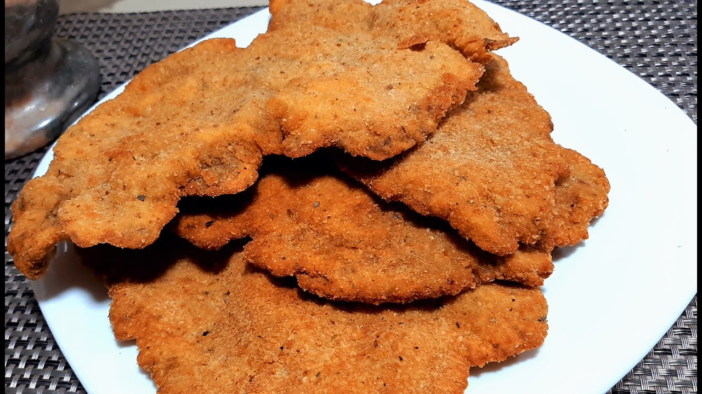

Milanesas de carne

Ingredientes
- Medio kg. de Picana fina (1 cm de espesor) cortados en bifes de 15cm x 10 cm aproximadamente
- 1 kg de Pan Rallado
- Dos huevos
- Un puñado de perejil
- Dos dientes de ajo
- Medio litro de aceite para frituras
Pasos
- Golpear los bifes de picana con un mazo de madera o ablandador de carnes
- En un bowl, mezclar los dos huevos con el ajo y perejil picados diminutamente
- Agregar y revolver los bifes de picana con la mezcla de huevos, perejil, ajo y dejar reposar por 15 minutos
- En un plato hondo, volcar el pan rallado